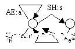
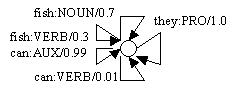

A Primer on Finite-State Software
for Natural Language Processing
Kevin Knight and Yaser Al-Onaizan, August 1999
Summary
In many
practical NLP systems, a lot of useful work is done with finite-state devices. This primer covers basic finite-state
techniques with examples and laboratory software called Carmel (downloadable
from http://www.isi.edu/natural-language/licenses/carmel-license.html).
Contents
1. Finite-State Acceptors
2. Finite-State Transducers
3. Probabilistic Acceptors and Transducers
4. Noisy Channel Decoding
5.
Acquiring Probabilities from
Data
======================================================
1. Finite-State Acceptors
A finite-state
acceptor (FSA) is a network of states and transitions. Each transition has a label. For our purposes, we will assume that
an acceptor has exactly one start state and exactly one final state
(which may be the same).
A string
is an ordered sequence of symbols drawn from a finite vocabulary.
An FSA accepts a string w1, w2 ... wn if you can trace
a path from the start state to the final state along transitions labeled w1,
w2, ... wn.
Here is an
FSA that accepts three distinct strings:

The
software we use has a special representation for writing down this FSA:
%%%%%%
Filename: fsa1 %%%%%%
3
(0
(1 "he"))
(1
(2 "saw"))
(2
(3 "me"))
(1
(4 "ran"))
(4
(3 "home"))
(0
(5 "she"))
(5
(3 "talked"))
The first
line gives the name of the final state ("3"). Here we use a number, but we can also
use symbolic names if we want. The
first state on the second line gives the name of the start state
("0"). Each line
specifies a single transition. The
format of each transition is:
(source-state
(destination-state label))
Exercise. Write
down an FSA that accepts (only) the following strings using 5 states or less:
"the tall man", "the short man", "a short man."
It is easy
to write down a "degenerate" FSA that accepts only a single
string. If the string is n symbols
long, then the FSA will have n transitions and n+1 states, e.g.:

%%%%%%
Filename: fsa2 %%%%%%
F
(S
(A "he"))
(A
(B "ran"))
(B
(F "home"))
Suppose we
want to test mechanically whether a certain string is accepted by a certain
FSA. We can do this with a generic
"carmel" operation.
%
carmel fsa1 fsa2
Exercise. Type this
command. If you get some output,
that confirms that the string is accepted.
We
can use the same operation to compute the intersection of strings accepted by
two or more FSA's. Consider the
following FSA:

%%%%%%
Filename: fsa3 %%%%%%
3
(0
(1 "he"))
(1
(2 "saw"))
(2
(3 "me"))
(0
(5 "she"))
(5
(2 "studied"))
Exercise.
Type the following command:
% carmel fsa1 fsa3
Your
results should be an FSA that accepts exactly the set of strings accepted by
both fsa1 and fsa3.
It
is possible to build an FSA that accepts an infinite number of strings, or
infinitely-long strings, e.g.:

%%%%%%
Filename: fsa4 %%%%%%
F
(S (A "the"))
(A (A "big"))
(A (F "dog"))
It
is sometimes handy to make use of the empty transition label *e*. You may take such a transition without
consuming any input. Consider the
following FSA:

%%%%%%
Filename: fsa5 %%%%%%
F
(S
(A "the"))
(S
(A *e*))
(A
(B "big"))
(B
(C "big"))
(C
(F "dog"))
This FSA
accepts two strings: "the big big dog" and "big big dog".
Exercise. Call
"carmel" on fsa4 and fsa5.
What does the intersection look like? You can see that the program worries about cycles and empty
transitions so that you don't have to.
======================================================
2. Finite-state transducers
An FSA can
only accept or reject a string. A finite-state
transducer (FST) can transform one string into another. There are many applications of
transductions in natural language.
You can easily imagine transforming strings of letters into strings of
phonemes (sounds), or word strings into part-of-speech strings (noun, verb,
etc.).
An FST is
just like an FSA, except the transitions have both an input label and an
output label. An FST
legally converts one string w1, w2, ... wn into another string x1, x2, ..., xm
if there is a path through the FST that allows you to trace the first string
using input labels and (simultaneously) the second string using output labels. For example, consider this FST:

%%%%%%
Filename: fst1 %%%%%%
0
(0
(0 "big" "small"))
(0
(0 "dog" "dog"))
This
transducer only has a single state, which is both start and final. Every time it sees the word
"big" on its input, it produces "small" on its output. Every time it sees the word
"dog," it outputs "dog." So it will convert an input like "big big dog big"
into "small small dog small."
Notice that this FST has no notion of grammar built into it; it merely
substitutes tokens.
Exercise. Build an
FST that takes lower-case letters on its input and produces corresponding
upper-case letters on its output.
The FST should have one state and 26 arcs. Call it "fst-capitalize."
The generic
"carmel" program will let you execute transductions automatically. Let's make an FSA with a sample string:

%%%%%%
Filename: fsa6 %%%%%%
F
(S
(A "big"))
(A
(B "big"))
(B
(C "dog"))
(C
(F "big"))
Now let's
stick this FSA on the input side of the FST:
%
carmel fsa6 fst1
Exercise. Try the
preceding command. The result
should be an FST, meaning it will have both input and output symbols on the
transitions. If you want sample
outputs, read off the output symbols and ignore the input symbols. (If a transition only displays one symbol,
it is both input and output).
An FST is a
bidirectional specification of the legal connections between input strings
output strings. You can use it in
either direction. You may have a
sample input string and desire a corresponding output string, or vice versa.
Exercise. Use your
capitalization FST to capitalize some lower-case string. Note that it is possible to use some
extra switches to avoid having to build a degenerate transducer for your input
string:
%
echo '"a" "c" "r" "e"' | carmel -sli
fst-capitalize
The
"-s" switch means "take one of the transducers to be given on
the standard input." The
"-l" switch means to append this standard-input transducer to the left-hand
side of the transduction sequence ("-r" means the right-hand
side). Finally, the "-i"
means that the standard-input object is in string-form rather than FST-form.
Exercise. Use the
same FST to de-capitalize a string, e.g.:
%
echo '"D" "A" "N" "E"' | carmel -sri
fst-capitalize
Input and
output strings need not be of the same length. It is useful to use the *e* symbol in this regard. For example, suppose we want to convert
the sound SH to the letters s and h, in that order. Then:

%%%%%%
Filename: fst2 %%%%%%
0
(0
(0 "K" "c"))
(0
(0 "AE" "a"))
(0
(1 "SH" "s"))
(1
(0 *e* "h"))
Note that
state 1 is not the final state.
Therefore, the transduction of "SH" to "s" is not
legal without the "h".
The transduction of sound "K" to letter "c," on the
other hand, leads us directly back to start/final state 0.
Exercise. Try these commands:
%
echo '"K" "AE" "SH"' | carmel -sli fst2
%
echo '"s" "h" "a" "c"' | carmel -sri
fst2
In an FST,
a single input string may correspond to many possible output strings, as for
example when a word has several alternate pronunciations. Likewise, a single output may
correspond to many inputs -- e.g., two words can have the same
pronunciation. As another example,
consider adding the transition (0 (0 "K" "k")) to the FST
above. This would give us two ways
to write down the sound "K."
Exercise. Add the
transition (0 (0 "K" "k")) to the FST above, and use the
transducer to generate possible letter strings for the sound sequence K AE
SH. Notice that the
"carmel" program will return an FSA with many paths (or solutions),
rather than a single long path.
FSTs can be
chained together. It is often
convenient to break down a complicated transformation process into a series of
simpler FSTs. For example, one FST
might convert English words into their parts of speech, while another might
combine part-of-speech subsequences into phrases, while another might translate
the phrases into a foreign language -- whatever! Instead of building one giant FST with English word
input-labels and foreign language output-labels, we can chain together smaller
FSTs:
%
carmel -lO fsa-input fst-a fst-b fst-c
Or we can
create a giant transducer by combining the FSTs offline:
%
carmel fst-a fst-b fst-c > fst-giant
======================================================
3. Probabilistic acceptors and transducers
Much of
linguistic theory revolves around dividing strings into two categories:
grammatical and ungrammatical.
This distinction is useful in real applications, too. For example, if a translator has two
possible outputs, we should prefer a grammatical one over and ungrammatical
one. A lot of grammatical
constraints can be encoded in FSAs and other devices such as context-free
grammars (CFGs).
However,
because of uncertainty, most applications require a more fine-grained
categorization. For example, a
speech recognizer may have to choose between transcriptions like "bear
midriff" and "bare midriff." Both may be equally grammatical, but in a given situation
one may be a much better guess than the other.
A weighted
finite-state acceptor (WFSA) assigns a probability to each string that it
accepts. Usually these
probabilities will add up to one, although it is not completely necessary. Any string that is not accepted is said
to have probability zero. The only
formal change from an FSA is that we will add a weight (or probability) to each
transition, e.g.:

%%%%%%
Filename: wfsa1 %%%%%%
3
(0
(1 "he" 0.4))
(1
(2 "saw" 0.8))
(2
(3 "me" 1.0))
(1
(4 "ran" 0.2))
(4
(3 "home" 1.0))
(0
(5 "she" 0.6))
(5
(3 "talked" 1.0))
To get the
probability of a string, we trace that string from start to end, and multiply
all of the transition probabilities.
For example, the probability of "he saw me" is 0.4 * 0.8 * 1.0
= 0.32.
Exercise. Verify
that the probabilities of the three strings accepted by the WFSA above add up
one.
Strictly
speaking, the probability of a given string is slightly more complicated. We really need consider every
accepting path through the WFSA for that string. For each path, we multiply the transition
probabilities. Then we sum up the
path probabilities for all the paths.
One of the
most useful things that a WFSA can do is implement a language model,
i.e., assign a probability to any English string of words. A typical language model is the bigram
model. This breaks down the
probability of w1, w2, ..., wn into a product of probabilities P(w1) * P(w2 |
w1) * ... * P(wn | wn-1). Each
individual P(y | x) gives the probability of the word y following the word
x. These can be collected easily
from a corpus of English.
We can
build a WFSA with one state for each item in the vocabulary. Between each pair state-x/state-y, we
have a single transition whose label is the word y, and whose probability is
P(y | x). We add a special final
state, with transitions leading to it from every other state (label = *e*,
probability = 1.0). Finally, we
add a start state, with transitions to every state-y (label = y; probability =
P(y)).
Many P(y |
x) values will be observed to be zero.
If we want to assign a non-zero probability to strings that contain
novel word pairs, then we can do smoothing. For example, instead of the observed P(y | x), we may use
lambda1 *
P(y | x) + lambda0 * P(y)
We can also
implement this in a WFSA.
Exercise. Can you
see how to do it?
Another
useful thing to do with a WFSA is list out its n most probable strings. The "carmel" program can do
this with the "-k" switch, e.g.:
%
carmel -k 2 wfsa1
This will
return the two top-scoring strings.
If you want to suppress spurious output symbols, quote marks, path
probabilities, and empty tokens (*e*), there are additional switches:
%
carmel -OQWEk 2 wfsa1
Exercise. Try these
two commands.
You will
not be surprised to hear that there is also a probabilistic version of the FST,
called the weighted finite-state transducer (WFST). Like an FST, it enables you to specify
legal mappings between sequence types, but it also enables you to assign a
weight to every specific input/output string pair. Often this weight corresponds to the conditional probability
P(output-string | input-string).
Again, we simply annotate each transition with a real number. To get the aforementioned conditional
probability, we trace a path that contains symbols from both input and output
strings, and multiply the individual transition probabilities.
Suppose you
want to map word strings onto part-of-speech tag sequences. This can be done with a single-state
WFST with V * T transitions, where V is the total number of words and T is the
total number of tags. Each
transition has a certain word w for its input label, a certain tag t for its
output label, and the probability P(t | w). Because of the way individual transition probabilities get
multiplied, you can see that this WFST breaks down P(t1, t2 ... tn | w1, w2 ...
wn) as the product P(t1 | w1) * P(t2 | w2) * ... * P(tn | wn). This might not be a very good idea,
since it makes no use of context.
But it is a first approximation, and it does allow us to assign many
possible tag sequences to a given word string. Some tag sequences are more likely than others.
We can get
a list of the top n most likely tag sequences by first combining a word-string
FSA with the tagging WFST. This
yields a WFSA that contains many tag sequences. We can then extract the n most likely paths from this
resulting WFSA, using the "carmel" switches already described.
%%%%%%
Filename: fsa7 %%%%%%
3
(0
(1 "they"))
(1
(2 "can"))
(2
(3 "fish"))
%%%%%%
Filename: wfst1 %%%%%%
S
(S
(S "they" "PRO" 1.0))
(S
(S "can" "AUX" 0.99))
(S
(S "can" "VERB" 0.01))
(S
(S "fish" "NOUN" 0.7))
(S
(S "fish" "VERB" 0.3))
Exercise. Try this
command: %
carmel -Ok 4 fsa7 wfst1
Notice that
in this case, the best scoring path is not a very good one. This is because we failed to take
context into account in assigning tags, as mentioned above.
======================================================
4. Noisy channel decoding
In computer
applications, it is often convenient to divide up a big job among smaller
modules. In natural language
processing, a common division-of-labor strategy employs the noisy channel
framework. Suppose that we want to
map word strings onto tag sequences with probability P(t1, t2 ... tn | w1, w2
... wn). Using Bayes rule, we can
rewrite this as follows:
P(t1, t2
... tn | w1, w2 ... wn) = P(t1, t2 ... tn) * P(w1, w2 ... wn | t1, t2 ... tn) /
P(w1, w2 ... wn)
If we only
care about generating the best tag sequences, then we can drop the
denominator. The two remaining
terms can be encoded in finite-state devices, which can then be combined with
the "carmel" program.
In the
noisy channel framework, we pretend that an original "clean" signal
consists of a sequence of tags.
Clean signals are generated according to the probability distribution
P(t1, t2 ... tn). Somehow, this
signal gets corrupted, and what we observe is a string of words. We need to remove the "noise"
and restore the original signal. This
is often called decoding.
P(t1, t2
... tn) can be implemented with a WFSA, as described in the language model
example above. It is easy to build
a bigram tag model, and only slightly more complicated to build a trigram
tag model (in the latter case, we need a state for every pair of tags). Here is a bigram example:
%%%%%%
Filename: wfsa2 %%%%%%
FINAL
(START
(PRO "PRO" 0.6))
(START
(NOUN "NOUN" 0.3))
(START
(AUX "AUX" 0.05))
(START
(VERB "VERB" 0.05))
(PRO
(AUX "AUX" 0.4))
(PRO
(VERB "VERB" 0.6))
(NOUN
(NOUN "NOUN" 0.7))
(NOUN
(VERB "VERB" 0.3))
(AUX
(VERB "VERB" 1.0))
(VERB
(NOUN "NOUN" 1.0))
(VERB
(FINAL *e* 1.0))
(AUX
(FINAL *e* 1.0))
(NOUN
(FINAL *e* 1.0))
(PRO
(FINAL *e* 1.0))
P(w1, w2
... wn | t1, t2 ... tn) can be implemented with a WFST, also as described
above. Notice that in this
formulation, our input symbols are tags, and our output symbols are words. That is the opposite of what we did
above. The transition
probabilities must now encode P(w | t) values, which will be different from P(t
| w) values. Here is an example:
%%%%%%
Filename: wfst2 %%%%%%
S
(S
(S "PRO" "they" 0.07))
(S
(S "AUX" "can" 0.21))
(S
(S "VERB" "can" 0.00001))
(S
(S "NOUN" "fish" 0.0001))
(S
(S "VERB" "fish" 0.0001))
Now we have
a complete Bayesian part-of-speech tagger! To run it on the sentence "they can fish," type:
%
echo '"they" "can" "fish"' | carmel -Isrik 4
wfsa2 wfst2
Notice that
this time, we use the switch "-r" because we want the sentence
"they can fish" to be appended to the right-hand side of the
transducer sequence.
Exercise. Try the
command. What do think of the
results?
Noisy
channel models implemented with WFSTs are powerful and versatile. As another example, consider the
translation of English names and technical terms into Japanese. The Japanese use a phonetic script for
such translations. The script
(called katakana) has a symbol for
every Japanese syllable -- one for "ka", one for "ko",
etc. So "computer"
becomes "ko n pyu u ta a."
When we observe a new katakana sequence, we have to decode it, i.e.,
guess what the original English name or technical term was. This is a hard task even for
people! Do you know what "ma
su ta a zu to o na me n to" is?
To generate
the "clean" signal, we can easily build a language-model WFSA for
English. The "noisy
corruption" of the sequence can proceed through several stages, each
implemented as a separate WFST.
The first stage converts an English word sequence into an English
phoneme sequence:
Angela Knight -> AH N J EH L UH N AY T
The next
stage converts an English phoneme sequence into a Japanese phoneme sequence,
adapting the sounds as necessary:
AH N J EH L UH N AY T -> A N J I R A N A I T O,
among other possible outputs
Notice that
the L got converted to an R, the vowels all changed, etc. The final stage converts a Japanese
phoneme sequence into the syllabic katakana writing system:
A N J I R A N A I T O -> symA symN symJI symRA symNA
symI symTO,
among other possible outputs
Given a
katakana sequence, we can decode it with a command like:
%
carmel -Irk 5 wfsa-english wfst-epron wfst-jpron
wfst-write-katakana
fsa-observed
[Note:
these large automata files are not in the sample/ directory -- this example is just for demonstration]. In this
case, you may get top n decodings like:
1.
ANGELA KNIGHT 6.79261e-12
2.
ANGELA NITE 1.06263e-13
3.
ANDY LAW KNIGHT 1.46027e-14
4.
ANDY LA KNIGHT 9.28955e-15
5.
ANGELA NATE 3.34392e-15
+ millions more
The numbers
are small because they represent P(english) * P(japanese | english). They would add to one if we completed
Bayes rule and divided each by P(japanese).
======================================================
5. Acquiring probabilities from data
Until now,
we have assumed that WFSTs are built from scratch. That is, you collect the probabilities yourself, from some
data resource, and type them into the individual transitions. Sometimes ideal probabilities are not
directly observable, however. In
such cases, it is convenient to set up a skeleton WFST and ask the machine to
compute probabilities that maximize the likelihood of data which is observable.
One example
is in smoothing a language model.
Recall the formula from above:
lambda1 *
P(y | x) + lambda0 * P(y)
While the P
values are observable from a corpus, the lambda values are not.
Another
example is cryptanalysis. Suppose
we are handed a letter-substitution cipher, i.e., an English string that has
been encrypted, letter for letter, according to an unknown substitution
table. For example, the encryption
table might dictate that every time you see the English (plaintext) letter A,
you should substitute the (ciphertext) letter P. We can set up decryption as a typical noisy-channel application. We build a WFSA to generate plaintext
statistically, according to observable English letter-pair frequencies. We then build a single-state WFST to
transform plaintext into ciphertext, with a transition for each of the 26 * 26
possible plaintext/ciphertext letter pairs. The catch is that we don't know what conditional
probabilities P(c | p) to assign these transitions. Ideally, we would like probabilities that maximize the
likelihood of the observed ciphertext, which can actually be computed in terms
of the WFSA/WFST combination just outlined:
P(c1 ...
cn) = sum over all p1 ... pn of P(p1 ... pn) * P(c1 ... cn | p1 ... pn)
The machine
can learn such probabilities using the forward-backward algorithm. When combining the WFSA and WFST, it is
necessary to carefully specify which transitions are fixed (those from the
WFSA) and which are learnable (those from the WFST). After the individual P(c | p) probabilities are learned, we
can decode the ciphertext using the normal methods outlined in previous sections
of this primer.
(No
exercises).